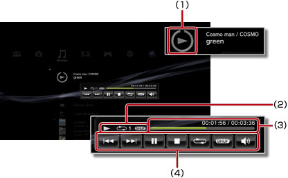

Musique > Utilisation du mini-panneau de configuration
Utilisation du mini-panneau de configuration
Utilisez le mini-panneau de configuration pour exécuter différentes fonctions pendant la lecture de musique.
1. |
Pendant la lecture de musique, appuyez sur la touche PS. |
||||||||
|---|---|---|---|---|---|---|---|---|---|
2. |
Utilisez les touches de navigation pour sélectionner l'icône du morceau désiré sous 
|
Conseils
- L'icône de la musique en cours de lecture s'affiche directement sous l'icône
 (Musique).
(Musique). - Appuyez sur la touche
 pendant la lecture de musique pour masquer le mini-panneau de configuration.
pendant la lecture de musique pour masquer le mini-panneau de configuration.
Précédent

Pour accéder au début de la piste en cours ou à la piste précédente.
Suivant
Pour accéder au début de la piste suivante.
Pause
Pour suspendre la lecture.
Arrêter
Pour arrêter la lecture ou masquer le mini-panneau de configuration.
Lecture aléatoire
Pour lire les pistes dans un ordre aléatoire.
Répétition
Pour lire les pistes de manière répétée. Vous pouvez sélectionner un des trois modes de répétition (indiqués ci-dessous) en appuyant sur la touche  .
.
 |
Pour lire une piste de manière répétée. |
|---|---|
|
Pour lire toutes les pistes de manière répétée. |
| Aucun affichage | Pour annuler la lecture répétée et lire toutes les pistes dans l'ordre. |
Contrôle du volume
Réglez le niveau de sortie du volume des pistes en cours de lecture sous (Musique). Vous avez le choix entre neuf niveaux.
Conseil
Si le niveau de volume est trop élevé, la sortie audio risque d'être déformée. Dans ce cas, diminuez le niveau.